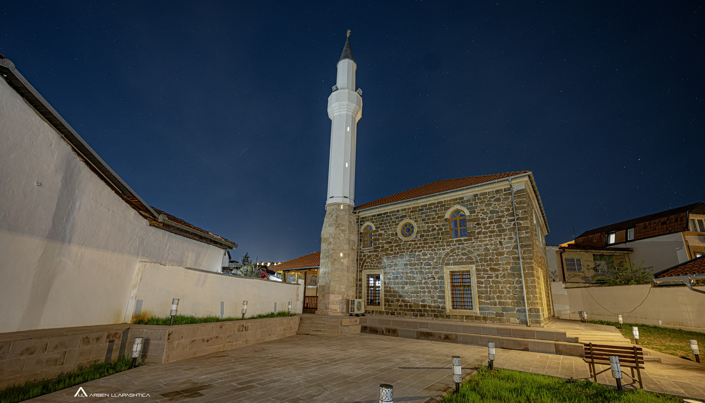
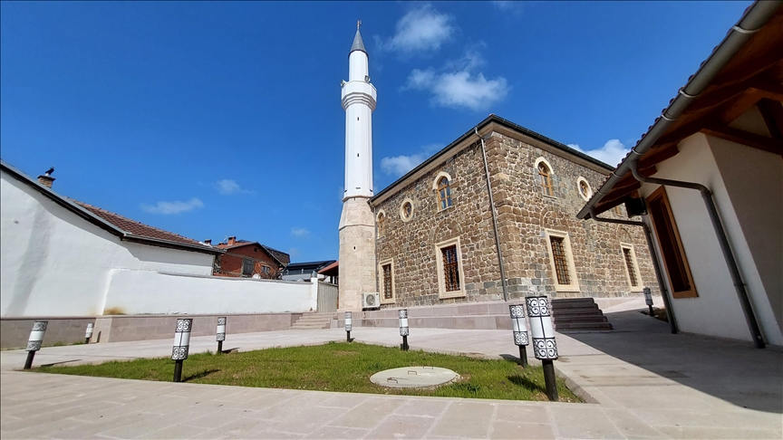
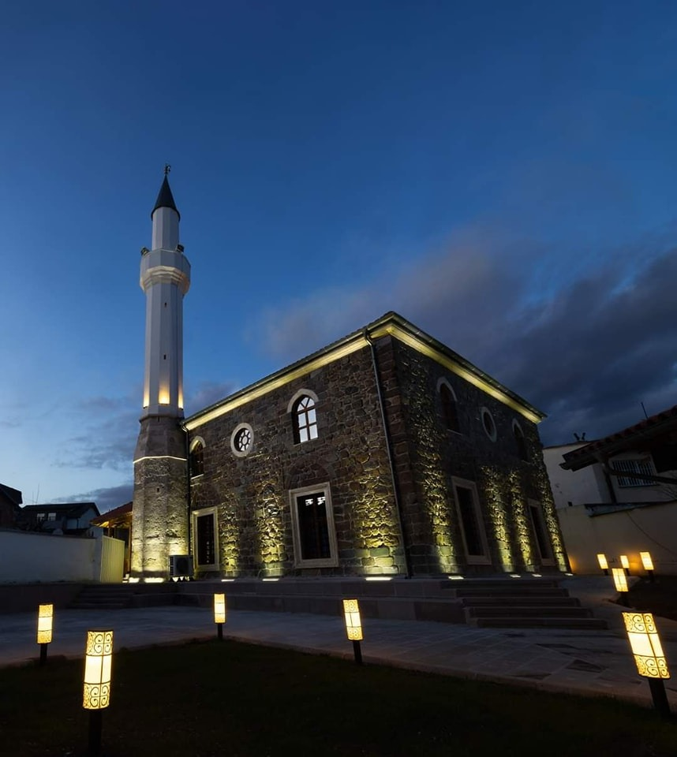
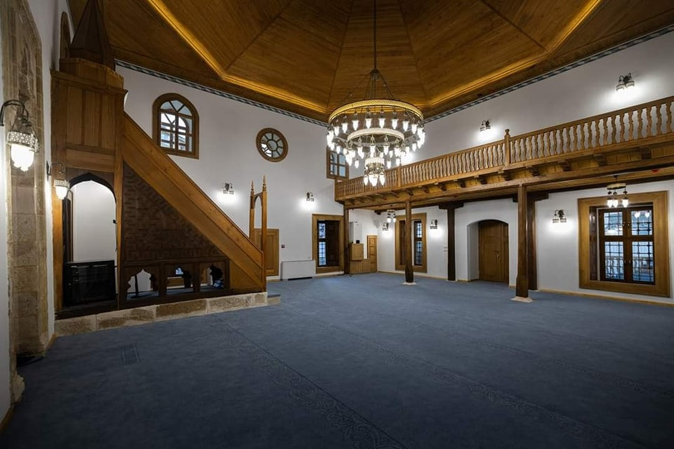
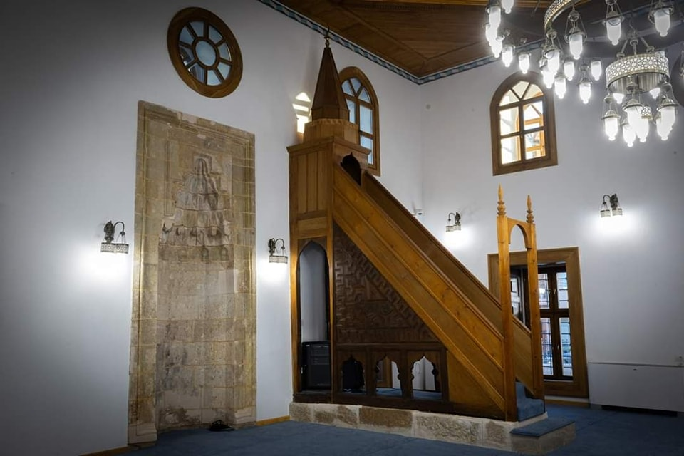

Monumentet historiko-kulturore
Prishtinë
Muzeu Kombëtar i Kosovës
Muzeu Kombëtar i Kosovës është themeluar në vitin 1949,
ndërkaq ndërtesa me arkitekturë Austro-hungareze daton që nga viti 1885/6.
Ajo ka për qëllim ruajtjen, mbrojtjen dhe prezantimin e Trashëgimisë Kulturore të Kosovës.
Muzeu i Kosovës përfshin një koleksion, me më shumë se 50 mijë eksponate të profileve të ndryshme,
prej pavijonit të arkeologjisë, teknologjisë, historisë, natyrës, ento-kulturës, folklorit, trashëgimisë etj.
Aktualisht, muzeu është duke u angazhuar në rikthimin e 1200 objekteve/artefakteve
të rëndësishme për trashëgiminë kulturore të Kosovës, të marra nga Beogradi gjatë vitit 1998. Muzeu i
Kosovës gjendet në rrugën Nazim Gafurri.Muzeu i përgjithshëm përbëhet nga tre pjesë të muzeut: vetë
Muzeu i Kosovës, Kompleksi Strehimor i Emin Gjikut ku është prezantuar ekspozita etnologjike dhe Muzeu
i Pavarësisë. Muzeu përbëhet nga katër sektorë, sektori arkeologjik, sektori etnologjik, sektori historik
dhe sektori natyror


Ndërtesa kryesore e muzeut përbëhet nga 3 salla ose
galeri dhe njëra prej tyre shërben si sallë për ekspozita të përhershme
arkeologjike, por ekspozita të ndryshme prezantohen edhe në oborrin e brendshëm
të muzeut, si dhe në lapidariumin përkatësisht në Parkun Arkeologjik, që është që
ndodhet pranë ndërtesës së muzeut, ose në anën e djathtë të tij. Në bodrume të muzeut
gjenden depot e mijëra gjetjeve, artefakteve dhe fragmenteve të lëvizshme të materialit
arkeologjik, sistematizuar dhe mbajtur në kushte të veçanta me vëmendje dhe kujdes të veçantë.
Në fund duhet të theksohet se brenda ndërtesës së Muzeut të Kosovës, përkatësisht në katin e tretë,
ju mund të gjeni ambientin e punës të Institutit Arkeologjik të Kosovës, një institucion shkencor-profesional
dhe përgjegjës për kërkime arkeologjike.
Xhamia e Pirinazit


Kjo xhami gjendet në rrugën “Ismail Dumoshi” në lagjen "Vellusha" në Prishtinë, në popull njihet si xhamia e Pirinazit.
Xhamia e Pirinazit u ndërtua nga të njëjti gurë sikurse edhe
Xhamia e Mbretit (Fatih). Ajo u ndërtua rreth njëqind vjet më pas, në pjesën e dytë
të shekullit të XVI në kohën kur u themelua edhe nezareti i Shkupit. Themeluesi i saj, njeriu i quajtur Piri Nazir, ka shërbyer si
Vezir gjatë sundimit të dy Sulltanëve Osmanë. Sipas disa legjendave vendore ‘Guri i Llazarit’,
i cili gjendet në kopshtin e xhamisë, është guri mbi të cilin Princ Llazarit i’u ka prerë koka më 1389.
Para se trupi i tij të zhvendosej në Manastirin e Ravaniqit, Princ Llazari ishte i varrosur në Xhaminë
e Pirinazit me lejen e Sulltan Bajazidit.
Që nga viti 1967 kjo xhami është në mbrojtjen e shtetit dhe ka marrë statusin e monumentit të regjistruar. Për shkak të vjetërsisë
së ndërtimit të saj, xhamia "Pirinaz" ndër vite është restauruar disa herë. Restaurimi i fundit nisi në vitin 2020 dhe përfundoi në
fillim të vitit 2024.



Sahat Kulla


Sahat Kulla gjendet në pjesën qendrore të pjesës së vjetër të Prishtinës në
afërsi të Xhamisë së Mbretit dhe gjendet në oborr të ndërtesës së gjimnazit.
Është një ndër monumentet më të rëndësishme të arkitekturës utilitare në Prishtinë.
Sahat Kulla është ndërtuar kah fundi i shek. XIX në afërsi të vendit ku ka ekzistuar
sahat kulla e përparme. Mekanizmi i orës ka funksionuar deri në vitet ‘70,ndërsa në vitin 2001,
është vjedhur kambana dhe mekanizmi i orës.
E vendosur në qendër të qytetit të vjetër, Sahat Kulla arrin lartësinë prej
njëzetë e gjashtë metra.
E ndërtuar për të rregulluar raportin e qytetarëve me religjionin dhe kohën,
Sahat Kulla sinjalizonte vaktet e lutjeve dhe poashtu sinkronizonte punën ditore të dyqanxhinjëve. Falë saj,
dyqanet hapeshin dhe mbylleshin në të njëjtën kohë. Kambana e kullës ishte punuar për Jak
Moldovanin në vitin 1764, informacion ky që mund të kuptohej nga mbishkrimi në sipërfaqën
e kambanës. Kambana ishte sjellur nga osmanlinjtë nga luftërat e tyre në Moldavi dhe Vllahi. Sipas urdhrit
të Jashar Pashës kambana është sjellë nga Vushtrria në Prishtinë.
Ndërsa në vitin 2002, është vendosur
ora digjitale. Natyrisht, ajo është larg nga forma origjinale.
Në sipërfaqen e kambanës gjendej mbishkrimi rumun nga viti 1764 i vojvodës Jan Moldovanit që në përkthim
do të thotë "Kjo Kambanë është punuar për vojvodën Jan Moldovanin në vitin 1764", shkronjat janë të mëdha me
gjatësi 2 cm dhe shtrihen përreth tërë sipërfaqes së kambanës. Kambana është dekoruar me numër të madh të ornamenteve
të ngjashme me gjethet e ahut. Edhe pse ka kaluar rrugë të gjatë dhe shpesh ka ndërruar vendet dhe selitë ishte në gjendje
të mirë dhe nuk kishte dëmtime të mëdha. Sahat Kulla është ndërtesë me bazë gjashtëkëndëshe. Lartësia e saj është 26 m, e
murosur me gurë deri në lartësinë 16.5m dhe me tulla të plota në pjesën tjetër të ndërtesës. Konstruksioni i kulmit është
prej druri të mbuluar me plumb. Në të gjitha fasadat e sahat kullës ka hapje të vogla harkore. Këndet e ndërtesës janë të
ndërtuara me gurë të gdhendur të lidhur me llaç gëlqeror, kurse sipërfaqet në mes janë të ndërtuara me gurë të parregullt
të lidhura dhe të suvatuara gjithashtu me llaç gëlqeror. Në brendi janë shkallët rrethore, në të cilat janë të vendosura
pllaka të gurëve (rrasa) me trashësi prej 3 cm. Në pjesën e sahat kullës të ndërtuar prej tullave shkallët janë prej druri,
çka tregon se kjo pjesë është ndërtuar më vonë.